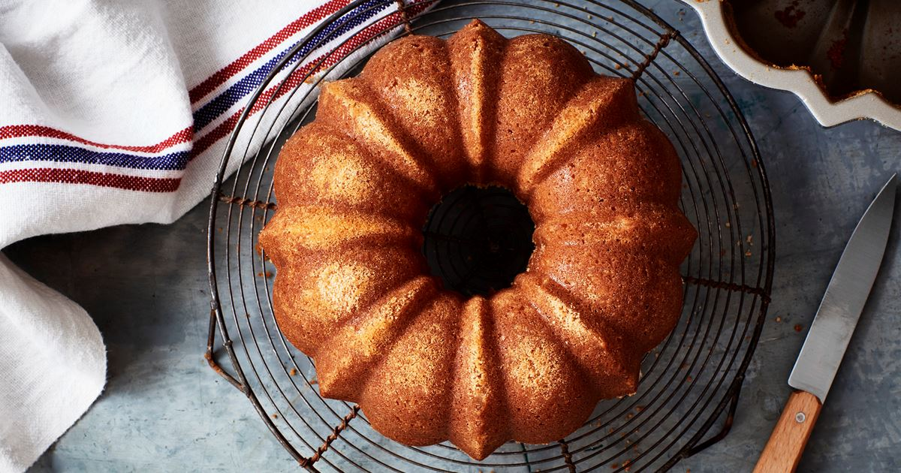

- 75g Smör
- 1 dl Mjölk
- 2 Ägg
- 2 dl Strösocker
- 2 tsk Vaniljsocker
- 3 dl Vetemjöl
- 1.5 tsk Bakpulver
Du behöver:
Sockerkaka
(10 portioner)
1. Sätt ugnen på 175°C
2. Smörj och brya en form som rymmer ca 1.5 liter
3. Smält smöret i en kastrull, häll i mjölken och låt det svalna
4. Vispa ägg och socker ljust och pösigt
5. Blanda ned vaniljsocker och mjöl blandat med bakpulver och till sist mjölkblandningen. Rör snabbt ihop
till en jämn smet och häll i formen
6. Grädda i nedre delen av ugnen i ca 35 min
Källa: Arla